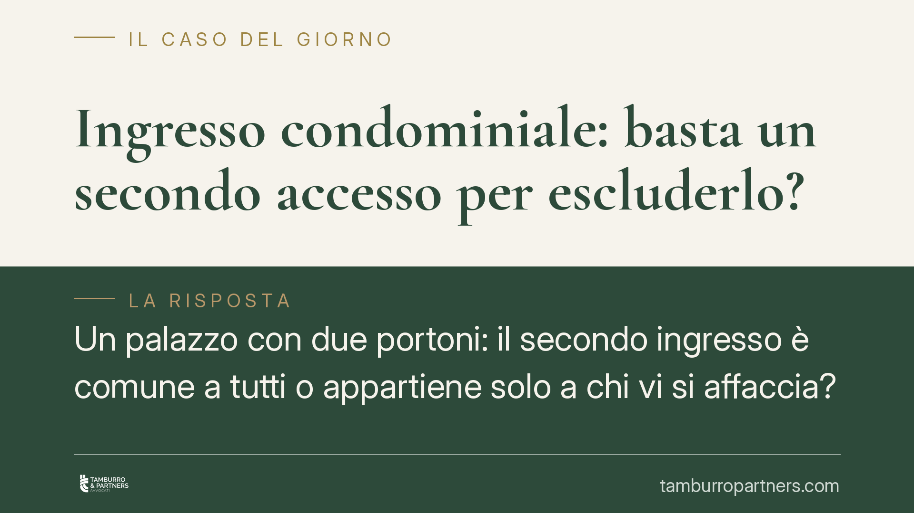

Ingresso condominiale: basta un secondo accesso per escluderlo?
Un palazzo con due portoni: il secondo ingresso è comune a tutti o appartiene solo a chi vi si affaccia? Una recente ordinanza della Cassazione ribadisce un principio netto: la presenza di un accesso alternativo non basta a escludere la natura condominiale. A contare è il titolo costitutivo del condominio, letto nel momento in cui l'edificio è sorto.

Il caso: due ingressi, una sola domanda
Negli edifici in condominio accade spesso che il fabbricato disponga di più accessi dalla strada. Da qui una questione ricorrente: se esiste già un portone principale, il secondo ingresso resta di uso comune oppure può considerarsi di proprietà esclusiva di alcuni condomini?
La controversia è giunta in Cassazione dopo il vaglio del giudice di merito. La Corte ha affrontato il nodo centrale: l'esistenza di un accesso alternativo è di per sé sufficiente a escludere che il secondo ingresso sia parte comune?
La risposta è negativa. La mera presenza di un'altra via d'accesso non incide sulla qualificazione del bene. Ciò che conta è altro.
Inquadramento normativo: la presunzione dell'art. 1117 c.c.
Il punto di partenza è l'art. 1117 del codice civile. La norma elenca le parti dell'edificio che si presumono comuni a tutti i condomini, salvo che il titolo disponga diversamente.
Gli androni, i portoni e i passaggi d'accesso non figurano come voce testuale autonoma nell'elenco. La loro riconducibilità alle parti comuni discende dall'interpretazione: rientrano tra le strutture e i manufatti "necessari all'uso comune", in quanto servono il godimento collettivo dell'immobile. Si tratta quindi di una presunzione di comunione fondata sulla destinazione funzionale del bene.
Questa presunzione non è assoluta. Può essere superata, ma solo dal titolo costitutivo del condominio: l'atto, di norma il primo frazionamento o la vendita delle singole unità, che ha dato origine alla comunione. Non bastano circostanze di fatto successive, né la comodità di un accesso diverso.
Il momento genetico del condominio
Qui sta il profilo decisivo dell'ordinanza. Per stabilire se un bene sia comune o esclusivo occorre guardare alla situazione esistente al momento in cui il condominio è sorto, cioè quando l'unico proprietario originario ha alienato la prima unità immobiliare separando le titolarità.
In quell'istante si cristallizza l'assetto proprietario delle parti comuni. Se in quel momento il secondo ingresso serviva l'edificio nel suo complesso, esso entra nel novero dei beni comuni e vi resta, salvo diversa e specifica previsione del titolo.
Ne consegue che vicende posteriori — l'apertura di un nuovo portone, l'uso prevalente da parte di alcuni condomini, la chiusura temporanea di un accesso — non valgono a modificare la natura del bene. Non spostano la presunzione, perché il parametro di riferimento è fissato alla genesi del condominio.
Implicazioni pratiche
Le ricadute per chi vive l'immobile sono concrete.
Riparto delle spese. Se l'ingresso è comune, i costi di manutenzione, pulizia e rifacimento gravano su tutti i condomini secondo i criteri legali e regolamentari, anche su chi normalmente utilizza l'altro accesso.
Opere sul bene. Modifiche, chiusure o trasformazioni dell'ingresso comune non possono essere decise dal singolo. Richiedono il rispetto delle competenze assembleari e dei limiti che tutelano il pari uso del bene da parte di tutti.
Uso privativo. Chi di fatto si serve in via esclusiva del secondo ingresso non acquista per ciò stesso un diritto di proprietà o un uso riservato. L'uso prolungato, da solo, non trasforma un bene comune in bene esclusivo in assenza di un titolo.
Chi intende far valere la natura esclusiva di un accesso deve quindi rintracciare e produrre il titolo: senza di esso, la presunzione di comunione prevale.
Cosa fare in concreto
- Reperire il titolo costitutivo del condominio e gli atti di provenienza, per verificare se contengano previsioni espresse sugli accessi.
- Ricostruire la situazione al momento genetico, individuando quando è sorto il condominio e quale fosse l'assetto degli ingressi in quella data.
- Verificare la natura del bene prima di eseguire opere su un ingresso: è opportuno accertarne la qualificazione per non incorrere in contestazioni.
- Portare in assemblea le decisioni che riguardano un accesso presuntivamente comune, rispettando quorum e competenze.
- Conservare la documentazione su spese e interventi, utile in caso di futura controversia sul riparto o sulla natura del bene.
---
Contributo informativo a cura di Tamburro & Partners Avvocati. Non costituisce parere legale.
Ogni condominio ha una storia a sé.
Se gestisci un'amministrazione e vuoi un confronto su una specifica questione condominiale, scrivi allo studio. Ti rispondiamo entro un giorno lavorativo.